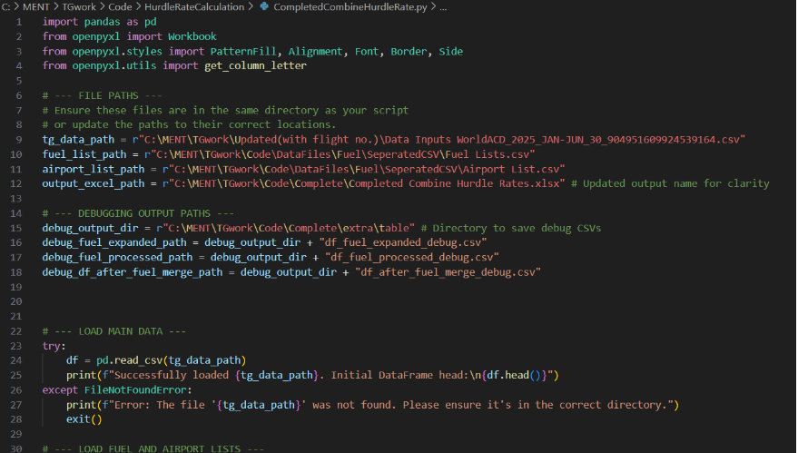

Cargo hurdle rate automation & inventory system
Automated a manual cargo pricing calculation and built part of an internal inventory management tool during a summer internship at Thai Airways Cargo.
- TG03–05
- Flights automated
- Manual → Auto
- Report generation
- Streamlit
- Catalog module
Context
Cargo hurdle rates had to be calculated by hand from large flight, airport, and fuel-surcharge datasets — a slow, error-prone process. I joined the team as an IT intern to help automate it, alongside building part of a new internal inventory system.
Approach
- 01 Wrote a Python script with pandas to load, clean, and merge flight, airport, and fuel surcharge data, taking ownership of flight numbers TG03, TG04, and TG05.
- 02 Calculated per-kilogram hurdle rates and surcharges for each shipment, mapped by geographic region and airport code.
- 03 Used openpyxl to export a styled, formatted Excel report matching the team's existing reporting layout.
- 04 Built the Product Catalog module of an internal inventory management system in Streamlit, handling adding, editing, and deleting product records.
Outcome
The Python tool replaced a manual calculation process with an automated, repeatable one, cutting down processing time and reducing errors. The catalog module became part of a working internal tool used by the team, and I presented the finished work to both my supervisor and my university advisor.